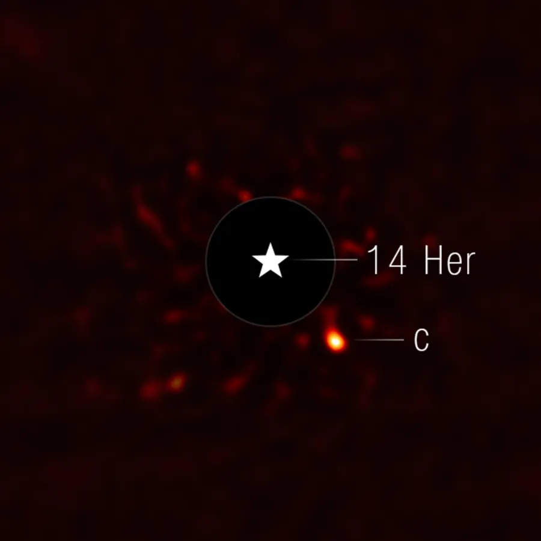

10. Juni 2025
14 Herculis c: einer der kältesten direkt abgebildeten Exoplaneten
Das James-Webb-Weltraumteleskop hat den Planeten 14 Herculis c direkt abgebildet. Mit einer Temperatur von etwa minus 3 Grad Celsius gehört er zu den kältesten Exoplaneten, von denen es ein Bild gibt. Sein Stern ist 60 Lichtjahre entfernt.
Der Planet hat etwa sieben Jupitermassen und umkreist seinen Stern auf einer stark elliptischen Bahn in rund 2,25 Milliarden Kilometern Entfernung. Er leuchtet schwächer, als es bei seinem Alter von etwa vier Milliarden Jahren und seiner Masse zu erwarten wäre. Die Forschenden vermuten als Ursache komplexe Vorgänge in seiner Atmosphäre.
Quelle: ESA/Webb: "14 Herculis c.", 10.06.2025